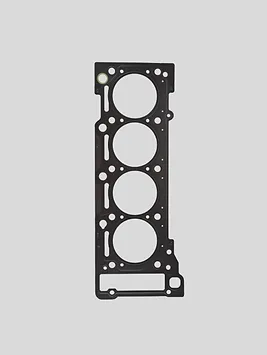

Cylinder Head Gasket

Ціна: $120
Країна: Германія
Постачальник: AUTOPARTSE
Кількість в наявності: 120
Опис:
Cylinder Head Gasket - це важливий компонент двигуна автомобіля, який встановлюється між головкою
блока циліндрів і блоком циліндрів. Ця прокладка герметизує простір між цими двома елементами і
запобігає витоку рідин і газів.
Особливості:
Герметизація: Прокладка головки блока циліндрів забезпечує ефективну герметизацію простору
між головкою блока циліндрів і блоком циліндрів, запобігаючи витоку охолоджувальної рідини,
мастила та газів.
Стійкість до високих температур і тиску: Виготовлена з високоякісних матеріалів, прокладка
головки блока циліндрів витримує високі температури і тиск, що дозволяє їй ефективно
функціонувати протягом тривалого часу.
Довговічність: Прокладка відзначається довговічністю і надійністю, що забезпечує
безперебійну роботу двигуна і запобігає можливим проблемам з герметизацією.
Характеристики:
Матеріал: Метал, гума або композитний матеріал
Сумісність: Підходить для широкого спектру автомобілів різних марок і моделей.